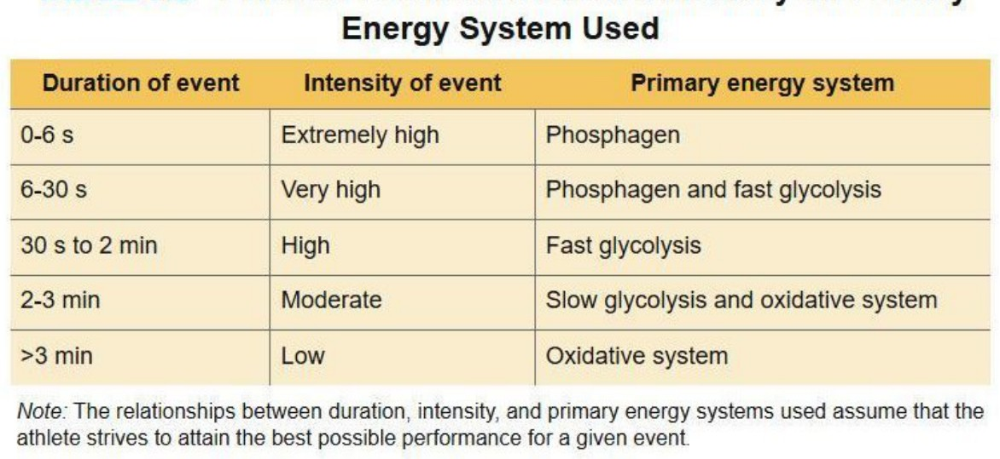
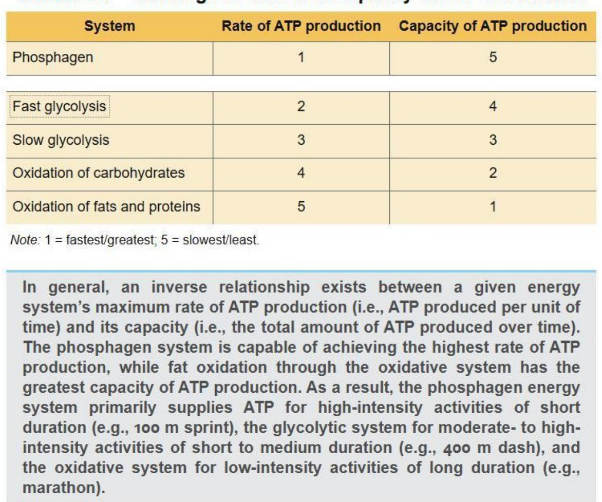
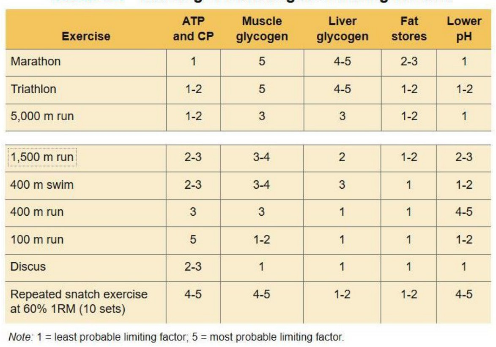
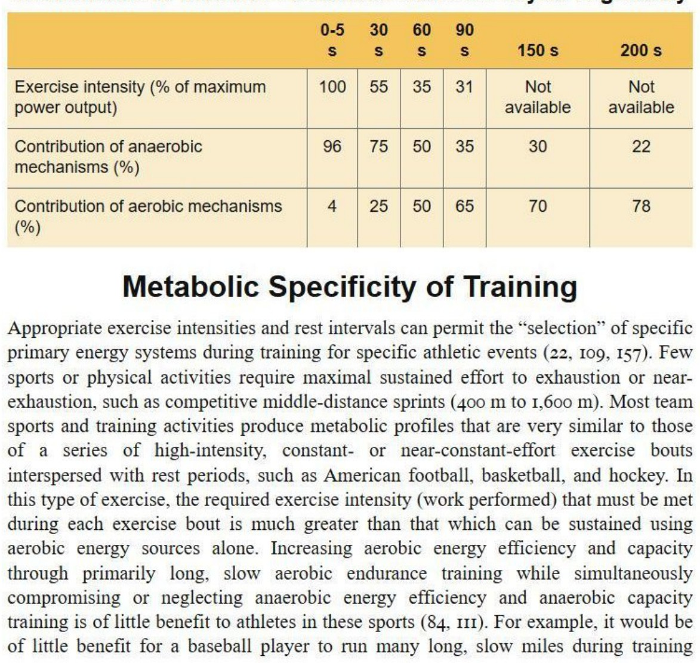
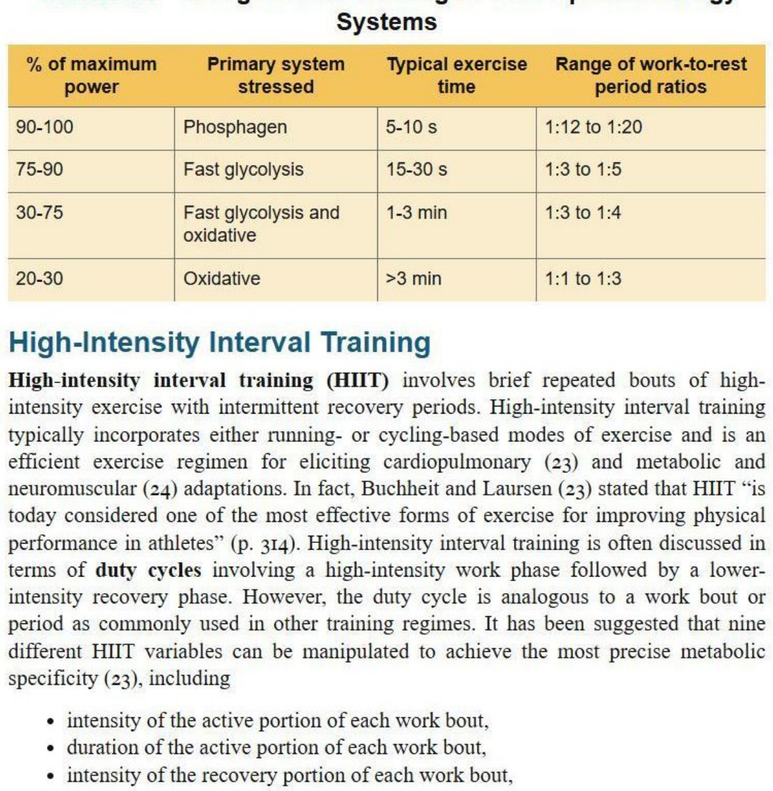
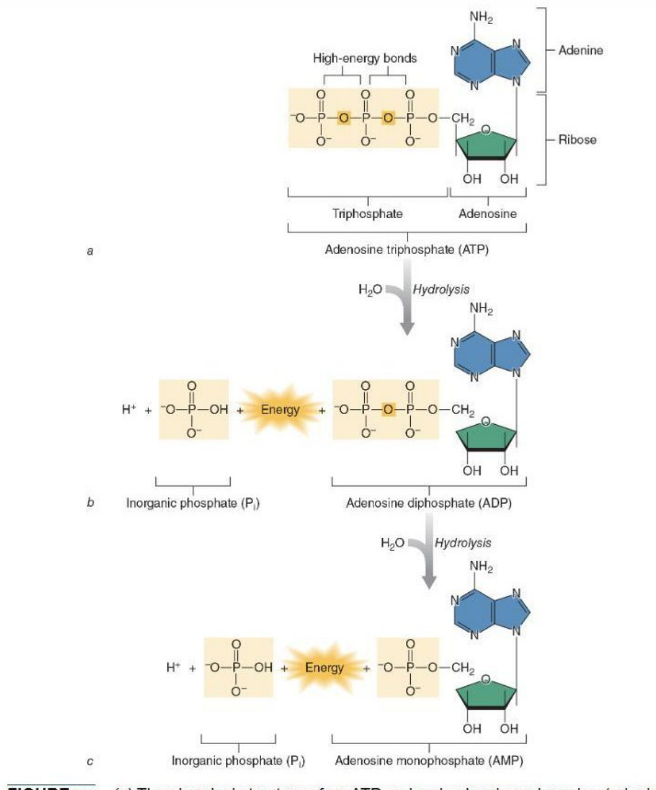

All three systems (phosphagen, glycolytic, oxidative) run at once; contribution is set primarily by intensity, secondarily by duration. Rate and capacity trade off inversely: phosphagen = fastest rate/lowest capacity, fat oxidation = slowest rate/highest capacity. Fatigue tracks depletion of phosphagens and glycogen — not FFAs, lactate, or amino acids. At exercise onset an O₂ deficit is covered anaerobically; afterward EPOC (excess post-exercise O₂ consumption) repays it, restoring PCr/ATP, reloading O₂ in blood and muscle, and clearing metabolites. EPOC scales mainly with intensity. Manipulating work:rest ratios lets you 'select' a target energy system.






Your Hyrox stations tax all three systems at once — sled push/pull sits on phosphagen+fast glycolysis, the 8×1 km runs on oxidative-glycolytic, wall balls and burpees on a mixed floor. Because full PCr rebuild is aerobic and takes up to ~8 min, program true max-power work (heavy sled, sprints) with long work:rest and never let glycogen bottom out — feed 0.7-3.0 g CHO/kg post-session for 24h refill. On race day the effort is continuous, so your ceiling is aerobic capacity and lactate clearance, not raw phosphagen power.
Forced retrieval first, then grade yourself. Whatever you miss resurfaces on the FSRS-chosen day.
Mixed across domains by exam weight — this feels harder than drilling one topic, and that difficulty is the point: it roughly doubles what transfers to test day.